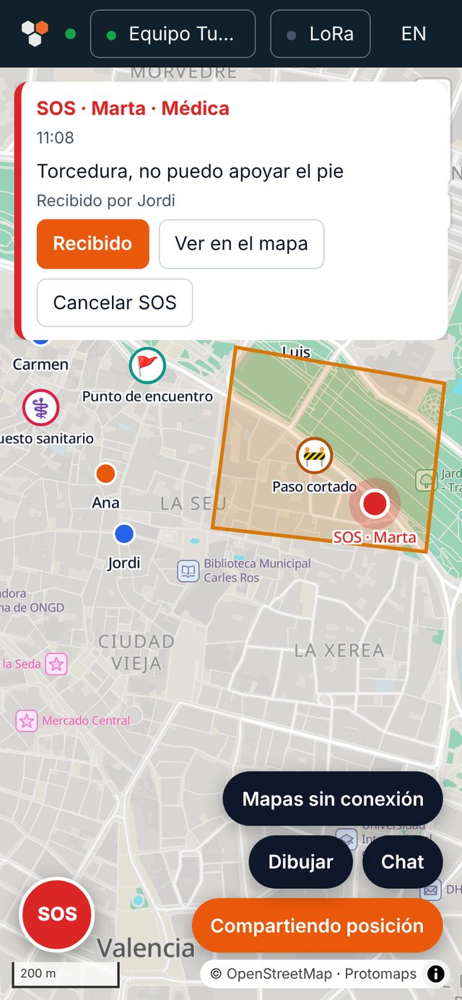
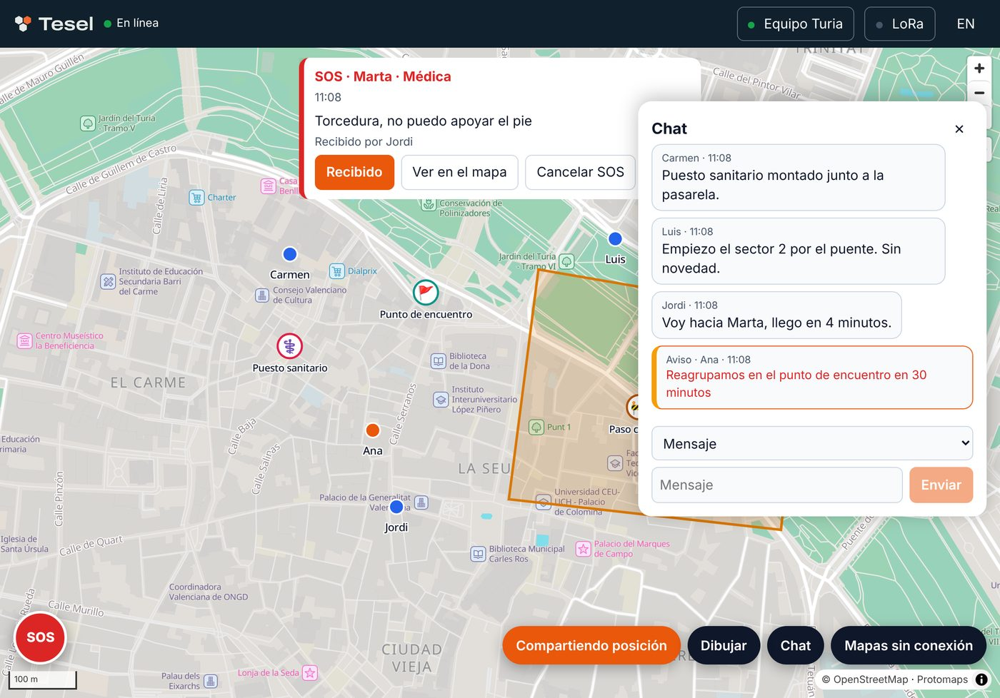

Cómo preparar al equipo, qué hacer durante un operativo y cómo mantener la coordinación
cuando no hay cobertura. Sin tecnicismos.

Qué es Tesel
Tesel es una herramienta de consciencia situacional para equipos civiles. Reúne en un mapa
común la posición de cada miembro, lo que se ha marcado en el terreno (sectores, puntos de
encuentro, peligros), los mensajes del equipo y las alertas. Si alguien necesita ayuda,
pulsa SOS y todo el equipo lo sabe al momento, con su posición.
Con internet funciona como cualquier app de mensajería. Sin internet, sigue funcionando de
dos maneras: con radios de bolsillo que se pasan los mensajes entre ellas,
o a través de un puesto de mando, un ordenador con su propia wifi en la
zona de operaciones.
Tesel no sustituye al 112.
Sirve para que el equipo se coordine. Si puedes llamar a emergencias, llama siempre.
Antes: prepara al equipo
Una emergencia no es el momento de aprender una herramienta. Reservad media hora un día
tranquilo.
Cada persona
Abre tesel.eu/app en el navegador del móvil y escribe tu nombre. No
hace falta correo, teléfono ni contraseña.
Añádela a la pantalla de inicio. En Android, con Chrome: menú ⋮ → «Añadir a pantalla de
inicio». En iPhone, con Safari: botón Compartir → «Añadir a pantalla de inicio». Así se
abre como una app y funciona sin conexión.
Descarga el mapa de tu zona: botón «Mapas sin conexión», mueve el mapa hasta tu zona y
pulsa «Descargar la zona visible». Hazlo con wifi, porque ocupa espacio.
Quien coordina
Crea el grupo en «Grupos» → «Crear un grupo». Quien lo crea es su coordinador: puede
invitar a otras personas y enviar avisos.
Pulsa «Invitar» y comparte el enlace o deja que escaneen el código QR. Quien tiene la
invitación entra en el grupo, así que compártela solo con quien debe estar.
Si vais a usar radios, preparadlas con antelación (ver Las radios).
Todo el equipo
Acordad un plan sencillo: un punto de encuentro, quién coordina y qué hacer si no hay
cobertura.
Haced un simulacro: mandad un mensaje, enviad un SOS de prueba y canceladlo, y si tenéis
radios, repetidlo con el móvil en modo avión y el Bluetooth encendido.
Repetid el simulacro de vez en cuando, con las baterías cargadas.
Durante el operativo

Un SOS recibido: arriba, quién lo pide y quién lo ha confirmado. En el chat, la respuesta
del equipo y un aviso de quien coordina.
Comparte tu posición con el botón «Mi posición» → «Compartir». Puedes
pausarla (el equipo ve la última) u ocultarla cuando quieras.
Escribe al equipo con el botón «Chat». Mensajes cortos y claros: por
radio cuestan menos y llegan antes.
Marca lo importante en el mapa: un punto de encuentro, un peligro, un
sector. Todo el equipo lo ve a la vez.
Si necesitas ayuda, pulsa SOS, elige qué pasa y envíalo. Lleva tu
posición. Cuando alguien lo vea, pulsará «Recibido» y lo sabrás. Si ya no hace falta,
cancélalo.
Si ves un SOS de otra persona, pulsa «Recibido» para que sepa que el
equipo lo ha visto.
Quien coordina puede enviar avisos desde el chat. Los avisos críticos se
quedan en pantalla hasta que cada persona los confirma.
Cuando no hay internet
Lo primero: no tienes que cambiar nada en la app. Tesel usa el enlace que
haya en cada momento. Lo que escribas sin conexión se guarda y sale en cuanto hay uno.
Con internet
Tu móvilServidorEquipo
Con radio
Tu móvilRadioMalla
Con un puesto
Tu móvilPuestoServidor
Los tres caminos. La línea de puntos es radio; la discontinua, un enlace que llega cuando
vuelve internet.
Si tienes una radio
Pulsa «LoRa» arriba y «Conectar radio». Desde ese momento tus mensajes, tu posición y tus
SOS salen por radio y te llegan los del equipo. La radio no tiene que estar a la vista:
puede ir en la mochila.
Si hay un puesto de mando cerca
Conéctate a su wifi (el nombre y la contraseña los tiene quien lo monta) y abre Tesel como
siempre. Arriba verás un punto naranja y «Puesto de mando»: ya estás en contacto con el
equipo. Lo explicamos en el apartado siguiente.
Si no tienes ninguna de las dos cosas
El mapa descargado sigue funcionando y puedes escribir: los mensajes se envían solos cuando
vuelva la conexión o cuando te acerques a un puesto de mando. Si alguien del equipo tiene
radio, mantente cerca de esa persona.
El puesto de mando
Un puesto de mando es un ordenador que alguien del equipo lleva a la zona de operaciones.
Hace tres cosas:
Crea su propia wifi. Funciona sin internet y sin antenas de telefonía,
como la wifi de una casa sin conexión al exterior.
Hace de servidor del equipo. Los móviles conectados a su wifi se pasan
los mensajes a través de él, aunque no tengan radio. Es la forma de incluir a quien solo
tiene un iPhone o no tiene radio.
Hace de puente. Si en el puesto hay una radio conectada, lo que llega por
radio pasa a la wifi y al revés. Y cuando el puesto recupera internet (por cable, por
satélite o con un móvil que tenga datos), envía todo al servidor de Tesel y recoge lo que
el resto de la organización haya escrito.
Piensa en él como el buzón del barrio.
Cada cual deja ahí sus cartas y recoge las suyas. Cuando pasa el cartero (internet), el
buzón le entrega todo y recibe lo que viene de fuera. Las cartas van cerradas: el puesto
no puede leer los mensajes, solo los guarda y los reparte.
Cómo conectarte a un puesto
Si ya tienes Tesel y estás en el grupo: conéctate a la wifi del puesto y
abre la app. Ya está. Verás «Puesto de mando» arriba.
Si no tienes Tesel: conéctate a la wifi del puesto, abre en el navegador
la dirección que te den (por ejemplo, puesto.tesel.eu/app), elige tu nombre y en «Grupos»
pulsa «Escanear código QR» para leer el código de invitación de quien coordina.
Si tu móvil dice que la wifi «no tiene internet», es normal: elige mantenerte conectado.
Si aún tienes datos móviles y la app no conecta con el puesto, desactívalos mientras estés
en él.
Quién monta el puesto
Lo prepara con antelación una persona con algo de soltura con ordenadores. Una vez
preparado, en la zona de operaciones solo hay que encenderlo. Necesita conectarse a internet
al menos una vez cada dos meses para renovar su certificado de seguridad.
Las radios
Tesel usa radios MeshCore: aparatos pequeños que se conectan al móvil por
Bluetooth y se envían mensajes entre ellos usando LoRa, una señal de radio que llega muy
lejos con muy poca energía. En Europa usan la banda libre de 868 MHz: no necesitan licencia.
Qué modelos: estamos validando radios en campo. Publicaremos aquí los
modelos recomendados cuando terminen las pruebas.
Prepararla: se hace una vez, desde un ordenador con Chrome, con el
instalador web oficial de MeshCore y el programa «Companion Bluetooth».
Alcance: desde un kilómetro en ciudad hasta decenas de kilómetros entre
lugares altos. Cada radio repite los mensajes de las demás, así que cuantas más haya, más
lejos llegan. Una radio en un balcón alto o en una ventana ayuda a todo el equipo.
Por qué va más despacio: la radio envía muy pocos datos, y la ley limita
cuánto tiempo puede emitir. Tesel da prioridad a lo urgente: primero los SOS, luego los
avisos, luego los mensajes y por último las posiciones.
Mensajes de MeshCore: si alguien cercano usa la app MeshCore, sus
mensajes aparecen en la pestaña «MeshCore» del chat, para que no se pierdan. Para
contestarle, usa la app MeshCore.
Si tienes iPhone
Por internet, Tesel funciona igual en iPhone. Lo que Safari no permite es conectar una radio
por Bluetooth. Mientras llega la app nativa, en una emergencia tienes dos opciones:
Probar el navegador Bluefy, que sí permite Bluetooth. Es una solución provisional que
todavía estamos comprobando.
Privacidad y seguridad
Todo lo del grupo va cifrado con una clave que solo tienen sus miembros. Ni el servidor ni
un puesto de mando pueden leer los mensajes.
La invitación es la llave del grupo. Quien la tiene, entra. Si se ha
compartido con quien no debía, quien coordina puede crear un grupo nuevo e invitar de
nuevo.
Las claves del grupo se guardan en tu móvil. Protégelo con bloqueo de pantalla. Al salir
de un grupo, se borra del móvil.
Por radio, el cifrado es más sencillo: protege de miradas curiosas, no de alguien con
medios y empeño. No mandes por radio lo que no dirías en voz alta en un sitio público.
Tu posición solo se comparte cuando tú lo eliges.
Si algo no funciona
Arriba pone «Sin conexión»
Tu móvil no tiene internet. Lo que escribas se guarda y saldrá después. Si tienes radio,
conéctala; si hay un puesto de mando, conéctate a su wifi.
El mapa sale en blanco
Sin internet solo se ven las zonas descargadas antes. Descarga tu zona en «Mapas sin
conexión» la próxima vez que tengas wifi.
No encuentro la radio al conectar
Comprueba que está encendida, cargada y preparada con el programa «Companion Bluetooth», y
que usas Chrome o Edge. Si estaba conectada a la app de MeshCore, desconéctala de ella
primero.
La radio dice que no tiene canales libres
Abre la app de MeshCore, borra un canal que no uses y vuelve a conectar desde Tesel. Tesel
nunca borra canales por su cuenta.
Estoy en la wifi del puesto pero no conecta
Desactiva los datos móviles y vuelve a abrir la app. Si es la primera vez, el navegador
puede pedirte permiso para acceder a dispositivos de la red local: acéptalo.